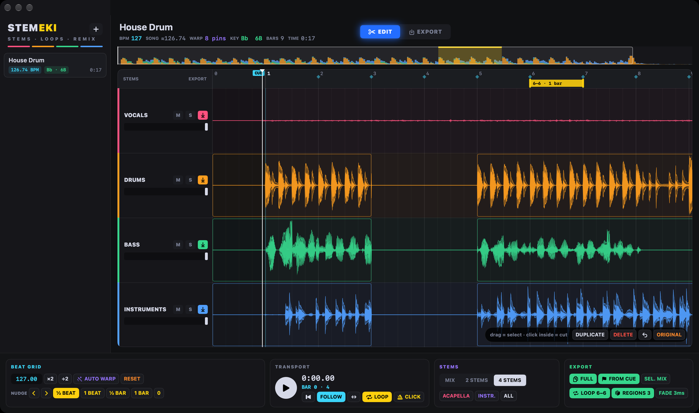
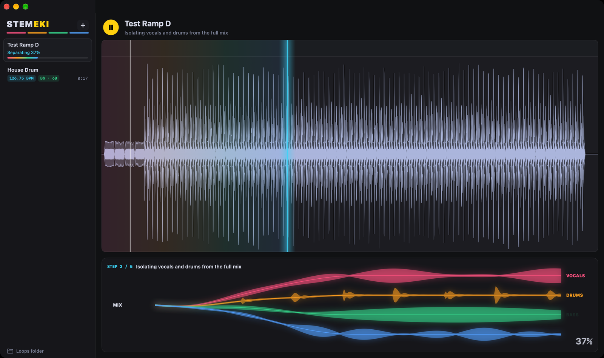
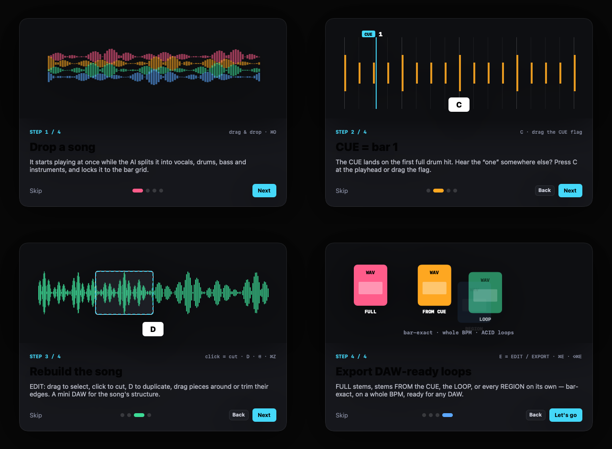

Split any song into stems, rebuild its structure, export DAW-ready loops. Bar-exact, on a whole BPM, on the audible start of every hit.

Most stem splitters stop at “here are your stems”. STEMEKI is where the work starts: a beat grid you can trust, a CUE that is really bar 1, and a mini DAW for the song's structure.
Tempo and downbeats come from the separated drum stem. AUTO WARP pins every beat to its real hit, so the grid, the click and every cut sit on the audible start of the hits — even when the tempo drifts.
The CUE lands on the first real drum hit AUTO WARP pins. Hear the “one” somewhere else? Press C at the playhead, even while playing, or drag the flag.
EDIT: drag to select, click to cut, D to duplicate, ⌘C ⌘V to copy anywhere, move pieces (even past the end, for a longer mix), trim their edges on 1/16 lines, add fades. Pieces overwrite what they cover, like in a DAW. Save it all as a project (⌘S) and pick it up later.
EXPORT: draw regions on the lanes — a verse of the drums, a chorus of the bass — and save each one as its own loop in one click.
From the plain to the unique. Every file keeps the original quality; WAV loops carry ACID and loop-point data, so loop-aware DAWs know what they are.
Every marked stem as it is — the whole song, original tempo.
Every stem from bar 1 to the end, on the export tempo — drop them under each other in your DAW, all on the grid.
The loop range of every stem, bar-exact — the chorus, the drop, the break, as stems.
Every region you drew, each in its own file, from the song you rebuilt. Unbeatable for building a loop library.
SEL. MIX puts the marked lanes into one file — for example DRUMS+BASS — following the faders.
Drop a song: it starts playing while the AI separates it, and the stems open in colour, following the playhead.

A four-card intro on the first start shows the whole workflow. The ? button brings it back.

| Space | play / pause |
| Enter | to the start (the view follows with FOLLOW on) |
| C | CUE to the playhead |
| E | EDIT / EXPORT |
| D ⌫ Esc | duplicate · delete · clear the selection |
| U | loop the selection (the loop follows it) |
| ⌘C ⌘V | copy · paste at the clicked spot |
| ⌘S ⇧⌘O | save project · open project |
| L K | loop · metronome |
| [ ] | NUDGE the music earlier / later |
| ⌘Z ⌘E ⇧⌘E | undo · export LOOP · export REGIONS |
1. Download the DMG and drag STEMEKI into Applications. 2. The first time, macOS may block it: click Done, then System Settings → Privacy & Security → Open Anyway. 3. Updates arrive by themselves.
STEMEKI separates with Demucs 4 on your Mac. At the first start, one click on INSTALL ENGINE sets up its own AI engine (about 300 MB download): no Terminal, no Python needed. Already have Python with demucs librosa soundfile? STEMEKI uses it.